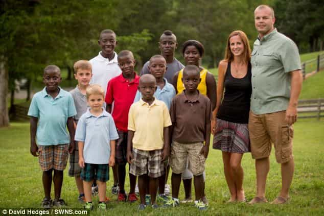

Daryush "Roosh" Valizadeh created ROK in October 2012. You can visit his blog at RooshV.com or follow him on Twitter and Facebook.


In a case of virtue signalling on steroids, an American Christian couple have adopted eight children from Sierra Leone in one go, adding to their existing biological family of two children. They made sure to broadcast their charity far and wide, even publishing a book, so that the entire world knows how superior they are to people who do not dedicate their lives to helping non-whites.
A couple have done an extreme ‘Brangelina’ by adopting eight siblings from an African orphanage in one go – the biggest single adoption in history.
Hayley and Mike Jones instantly increased the size of their family from two to ten by adopting the children from Sierra Leone.
The pair wanted a bigger family but were put off having children after both of Hayley’s pregnancies ended with emergency C-sections.

I would also be concerned for my wife’s health if she had two difficult births, but I would look to alternatives such as using a surrogate mother if I desired more children. The first thing on my mind would not be flying to Africa to adopt eight African children without considering how such an addition would affect my two existing children.
When the couple originally looked into adopting they were adamant it would just be one or two children.
But after hearing the names of a number of children who were still waiting to be adopted they decided they should take more.
They were then told about Michael, 16, Samuel, 15, Gabrielle, 12, Levi, 11, Malachi, nine, Judah, eight, Isaiah, seven and Zion, five, and decided they would be the perfect addition.
Mr Jones said: ‘We thought it was about two or three children we’d be adopting when we initially met the orphanage.
‘But God was telling us both separately to keep going for more and more – it was just brought up that there was a sibling group of six and eight.
Did God also tell them to run to the Daily Mail to share the tale? We’ll never know, but at risk of projecting my hyper-sexual worldview onto the couple, I can’t help but notice that the oldest “child” is more athletic, virile, and masculine than the husband.

“Child”
Is it possible that his mother adopted an alpha male to compensate for her beta male husband? We’ve seen this before with Western European women who cuck their boyfriends by eagerly adopting masculine refugees into their homes.
Honey, I’m not happy. Let’s adopt an African refugee!
Sweetie, can Roosh Junior move into the bedroom with us? I want him to be comfortable.
Since the article mentioned that the wife had an interest in Africa, it’s safe to say that it was her idea to adopt. While we should all be thankful that the African children have a second-chance at life, and I hope they do thrive in America by attending prestigious Ivy League colleges, we can’t avoid the couple’s political intent, which Matthew 6 of the Bible specifically shames.
1 “Be careful not to practice your righteousness in front of others to be seen by them. If you do, you will have no reward from your Father in heaven.
2 “So when you give to the needy, do not announce it with trumpets, as the hypocrites do in the synagogues and on the streets, to be honored by others. Truly I tell you, they have received their reward in full. 3 But when you give to the needy, do not let your left hand know what your right hand is doing, 4 so that your giving may be in secret. Then your Father, who sees what is done in secret, will reward you.”
Forum member Ocelot explains further…
All telescopic philanthropy is virtue signalling: no exceptions. They could have adopted 8 American orphans of any ethnicity of their choosing, and used the resources saved on other charitable ventures.
There’s a reason they chose not to dedicate their resources to helping those closer to home. There’s also a reason they chose not to adopt some passably-white-looking kids orphaned by Islamic militants killing their parents in the middle-East.
It was important that the children both resembled them as little as possible, and were from an area firmly associated in most people’s minds with crushing poverty. Because the act is about them, not about the children. Hell, if you care about the kids so much, why not use your resources to pay someone in their own country to adopt and raise them instead of transplanting them into a foreign land.
It’s also a possibility that the intention is to groom these kids to be sent back to their home country as evangelists of whatever fake-ass McChurchian sect they belong to.
As the West continues to collapse, we may see no limit to how white Americans race to have themselves replaced by foreigners. It’s almost as if they longer want to exist.
Read Next: 6 Signs That A Man Is A Cuckold